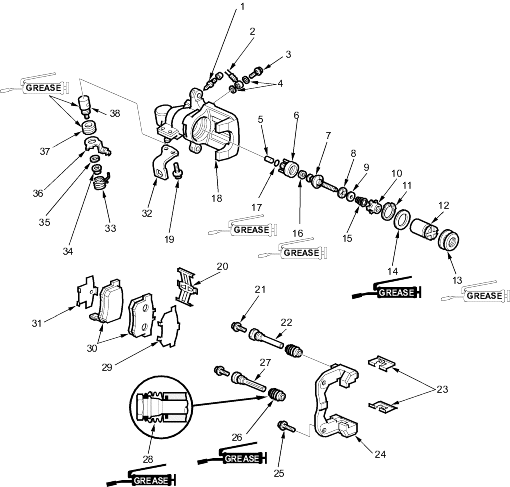

CAUTION
CAUTION
Frequent inhalation of brake pad dust, regardless of material composition, could be hazardous to your health.
- Avoid breathing dust particles.
- Never use an air hose or brush to clean brake assemblies. Use an appropriate vacuum cleaner.
Conventional Brake Components
|
19-47 | ||
Frequent inhalation of brake pad dust, regardless of material composition, could be hazardous to your health.
|
Remove, disassemble, inspect, reassemble and install the calliper and note these items:
 : : |
Rubber grease | ||
 : : |
Silicone grease | ||
 |
|
||